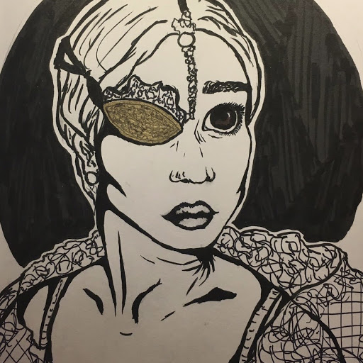

Chloeantoinette Santos
I am currently a college student attending the University of California, Riverside as a double major in filmmaking and music composition. I am a first year and am actively seeking out internship and student-work opportunities during my studies here. I plan to work in film production design and scriptwriting, whilst also pursuing my original music and acting/directing career. I currently do online videos through TikTok and sell commissions of my original artwork as a part-time job. These part-time jobs carry skills that are transferrable to my main careers in pursuit. I also work at my local church as a youth group instructor, perform in the weekly Sunday mass worship band, and help coordinate community service events involving the church throughout the year.
My filmmaking skills include editing in Adobe Premiere Pro, animating with the Adobe Suite, writing and revising scripts, acting, directing, set design, costuming, camera work, and lighting design. My musical skills include piano, guitar, cajon, violin, melodica, ukulele, harmonica, singing, working GarageBand for producing and vocal mixing, and writing original work. I am currently seeking internships and work opportunities related to these fields of study. In school, I am actively involved with my university's Polynesian dance team and music production club. However, I am also currently looking to get involved with the student government within my college. As for experience, my most notable works include working in a school advanced video production class in which biweekly episodes were made. I also have worked in the statewide Publicity Department for the Southern California Junior State of America as a videographer and spent 4 yeqars in journalism for the school newspaper. In terms of music, I have been playing piano for 10 years and guitar for 4 years. I performed in an advanced competing choir for 4 years and show choir for 2 years. My hobbies include hula and tahitian dancing, painting, ink art, jamming out to 70s and 80s rock music, and diving into fantasy and science fiction works. I also run a TikTok page with a notable following, thus giving me experience in social media management and producing consistent original content on my own. Some notable achievements of mine include being honored by my city council for my work in promoting women in technology jobs, the National Women's Computing and Informative Technology Honorable Mention award, film festival showcasings, and an official publication of my poetry in the American Library of Poetry collection.
Now for some fun facts about me! My astrology sign is Aries, but that's about all I know about astrology. My taste in music consists of a lot of 70s and 80s rock, as well as modern alt-rock. That being said, some of my favorite musical artists include Motley Crue, Greta Van Fleet, and Yungblud. I am a big fan of fantasy fiction, too. My favorite superheroes include the Runaways, specifically Nico Minoru and Chase Stein, Nightcrawler, Gambit, Rogue, and Thor Odinson. My all-time favorite movies are Song of the Sea, Cinderella (2015 live-action version), The Way He Looks, The Zodiac Killer, Thor: Ragnarok, and The Dirt.
Experience
Videographer
• Recorded and edited videos for conventions and events
• Made social media advertisements, informative videos, and event reels/recaps
• Worked in collaboration with other videographers and professional documentary creators
Video Editor and Scriptwriter
• Produced high quality biweekly episodes
• Worked with Canon and Nikon video cameras
• Edited in Adobe Premiere Pro and Adobe Photoshop
• Wrote scripts for the following video types: news, horror, comedy, and drama
Group Leader
• Taught lessons on Catholicism to high schoolers
• Organized community service events such as homeless supply drives and building fundraisers
• Performed piano and guitar every week for mass
• Planned and helped run weekend retreats for high schoolers
Education
University of California Riverside
University of California Riverside
Portfolio
